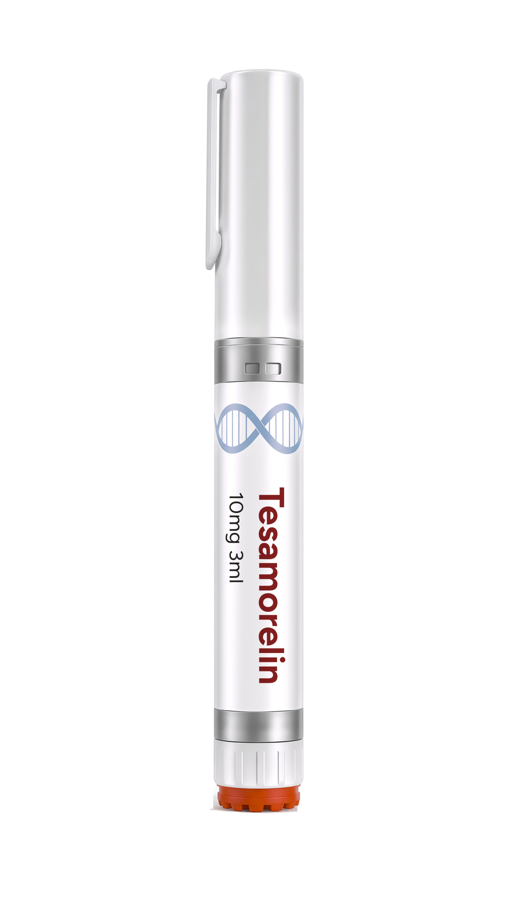

Must-know
Stereochemical engineering of GLP-1 blocks proteolysis while preserving its metal-binding core
November 17, 2026 · Chemical Communications · PMID 42936998
Potoczniak and colleagues report a liraglutide analogue, 7D liraglutide, with D-amino acids at seven positions that sit on known DPP-4 and neprilysin cleavage sites (positions 8, 15, 18, 19, 27, 28, and 31, numbered on GLP-1(7–36)). The substitutions are meant to keep the side-chain chemistry while making those bonds a poor fit for the proteases. PubMed 42936998 · DOI 10.1039/d6cc04811k.
In their chemical comparison of GLP-1, liraglutide, and 7D liraglutide, the D-substitutions blocked proteolytic degradation. Zinc(II) and copper(II) still followed the same coordination path, including the histamine-like site near neutral pH and the later amide-rich copper core. The metal-binding core stayed intact while enzymatic stability changed.
Why it matters. The paper is a structure and stability result for people studying peptide half-life, formulation stability, and structure–activity work on incretin-class sequences. It does not test clinical efficacy, and it does not speak to compounding. Research-use context only.
GLP-1(9–37) improves left ventricular function in a mouse model of cardiac pressure overload
November 16, 2026, online ahead of print · Diabetes, Obesity and Metabolism · PMID 43036293
Moellmann and colleagues overexpressed the DPP-4 cleavage fragment GLP-1(9–37) with an AAV vector in mice under cardiac pressure overload. That fragment does not bind the classical GLP-1 receptor. The animals did not show a change in glucose metabolism. AMPK and PGC1α signaling increased, which the authors read as a shift toward mitochondrial biogenesis under hypertrophic stress. Septal thickness and cardiac fibrosis were lower, and adverse remodeling was attenuated. PubMed 43036293 · DOI 10.1111/dom.71541.
Why it matters. This is a positive preclinical signal on mitochondrial and cardiac-remodeling pathways. It is adjacent to laboratory interest in mitochondrial-related research peptides. It is mouse data from gene overexpression, not a human result, and not a result for any research-use catalog peptide.
Product spotlight
Tesamorelin

Tesamorelin is a synthetic 44-amino-acid analog of growth hormone-releasing hormone, GHRH(1–44), with an N-terminal trans-3-hexenoyl group. The Tesamorelin 10 mg pen holds 10 mg in 3 mL, about 3.33 mg per mL. A 30 mg pen holds 30 mg in 3 mL, about 10 mg per mL. Both are already in solution for laboratory work. No mixing step is required.
Tesamorelin is also the active ingredient in an approved medicine studied for excess visceral abdominal fat in HIV-associated lipodystrophy, including liver-fat and later neurocognitive reports. That record belongs to the approved medicine. The catalog pens are laboratory research material. They are not that medicine, they are not a compounded copy of it, and they are not for human or veterinary use.
What researchers look at
- GHRH-receptor activation and growth-hormone axis pharmacology
- Visceral adipose and liver-fat endpoints in the published HIV-associated lipodystrophy literature on the approved medicine
- Body-composition research models
- The N-terminal trans-3-hexenoyl group as a stability feature of the GHRH(1–44) scaffold
Shop the 10 mg pen · 30 mg pen · Tesamorelin research overview
Also on the radar
A TAT-tagged elastin-like polypeptide and dermal matrix restoration in a mouse aging model
November 18, 2026 · Journal of Materials Chemistry B · PMID 42969442
Huang and colleagues built RTE, a recombinant elastin-like polypeptide with a C-terminal TAT motif, so more of the protein could cross skin than the same polypeptide without TAT. In a D-galactose mouse model of skin aging, topical RTE improved hydration and barrier function and supported collagen deposition and elastic-fiber organization. In zebrafish, it reduced injury and reactive-oxygen signal after ultraviolet exposure and supported tail-fin regeneration. PubMed 42969442 · DOI 10.1039/d6tb02021f.
Why it matters. The findings sit next to laboratory interest in skin-matrix research peptides such as GHK-Cu. They are preclinical. They are not a result for GHK-Cu, and they are not a human efficacy study.
Coronary outcomes with semaglutide and tirzepatide, noted from the December issue
Nutrition, Metabolism and Cardiovascular Diseases, December 2026 issue · Epub July 7, 2026 · PMID 42469143
This systematic review is outside the strict November 16–23 window. The article was published online on July 7, 2026, and the print issue is December 2026. It is listed here because that issue is the one now in view, not because it is a new paper this week.
Zhou and colleagues pooled randomized trials of subcutaneous semaglutide or tirzepatide in adults with type 2 diabetes, obesity, or both. In the semaglutide trials, pooled risks were lower for a broad coronary composite (RR 0.80, 95% CI 0.73–0.87), acute coronary syndrome (RR 0.77, 95% CI 0.70–0.85), and myocardial infarction (RR 0.70, 95% CI 0.62–0.80). Tirzepatide estimates were not statistically significant for most of those outcomes. The broad composite was RR 0.74 (95% CI 0.52–1.07), on fewer events. PubMed 42469143.
Why it matters. This is a cardiovascular-outcome signal for two approved incretin medicines. It does not transfer to research-use peptides, and this week’s scan did not tie it to a compounding or shortage change.
What did not move this week
No new peer-reviewed positive human efficacy paper on BPC-157, TB-500 or thymosin β4, GHK-Cu, Semax, Selank, MOTS-c, SS-31 or elamipretide, CJC-1295, ipamorelin, tesamorelin, sermorelin, or AOD-9604 appeared in PubMed inside November 16–23, 2026. ClinicalTrials.gov showed no major status or results update for those compounds in the same window. A tirzepatide ocular-morphology trial registration was visible and is not a results readout.
Queries covered PubMed, ClinicalTrials.gov, FDA.gov, and major trade outlets. After older items and negative-safety items were set aside, the week was quiet on research-use peptides themselves.
Left out on purpose: influencer and clinic stack posts, repeat discussion of the October 2026 HHS enforcement-discretion notice, chatbot studies about unregulated peptides, and FDA warning, import-alert, or negative-safety commentary.
Research Use Only: This page is educational. It does not describe how to compound, prescribe, or administer any substance. Palm Beach Vitality products are for laboratory research only and are not for human consumption. They are not intended to diagnose, treat, cure, or prevent any disease. Read the primary papers linked above before relying on this summary.